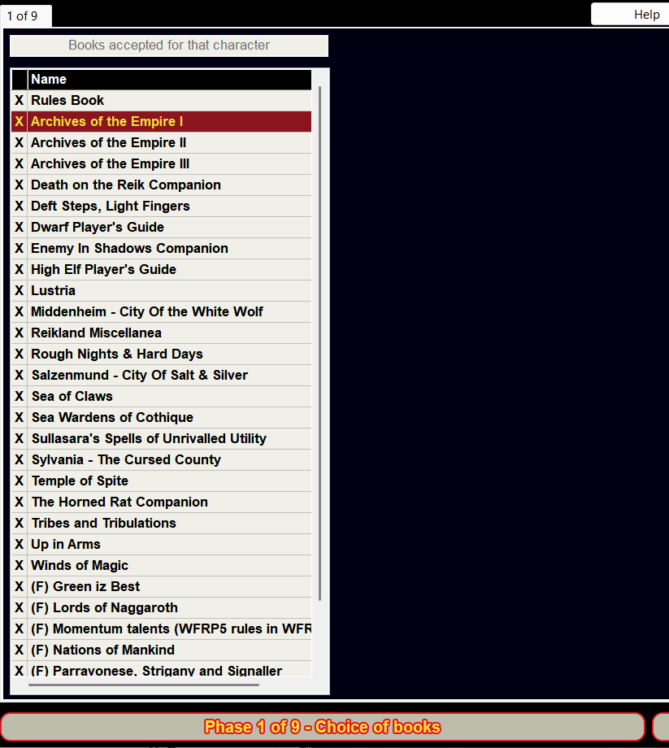
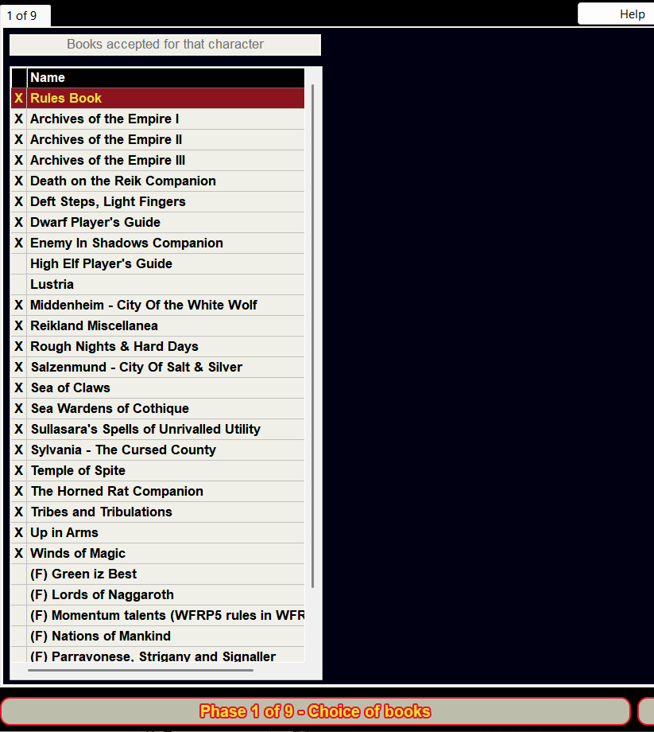
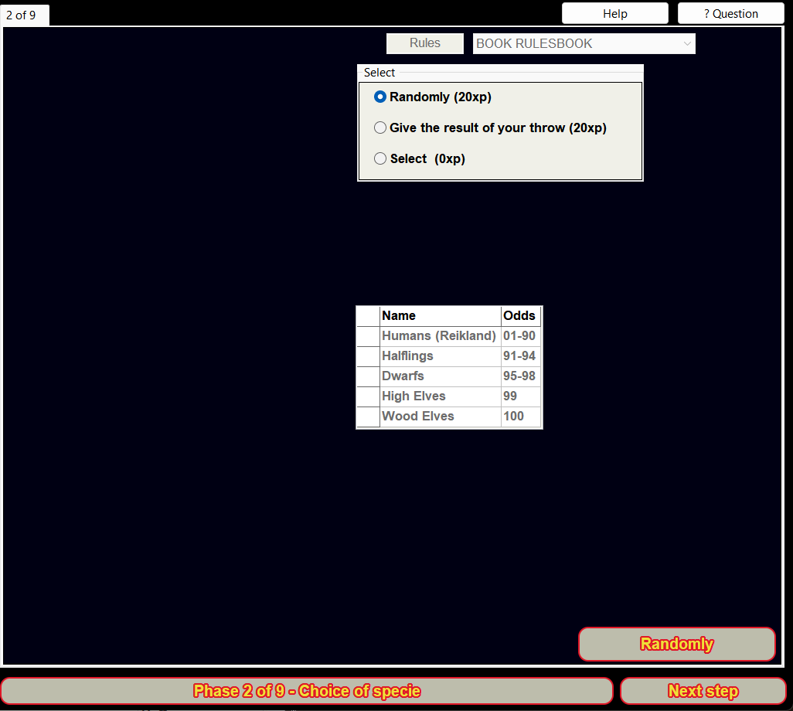
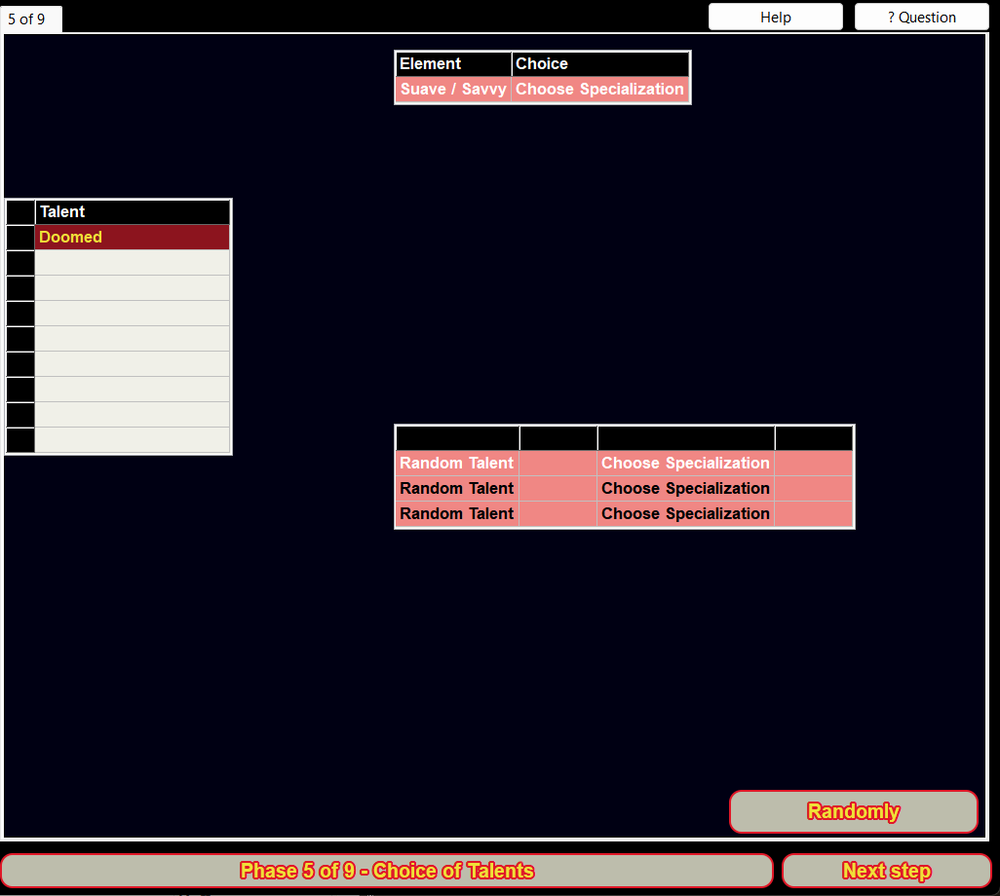
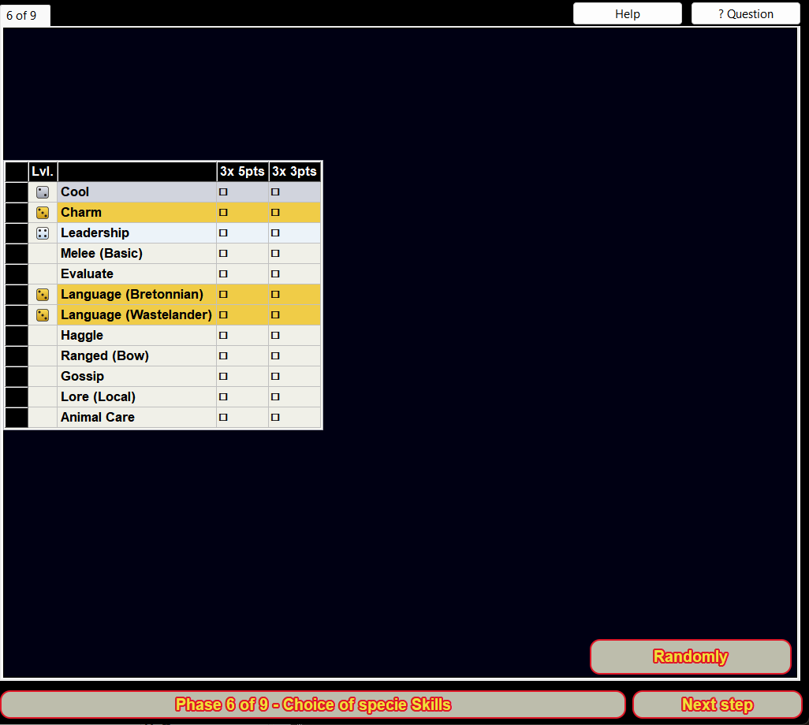
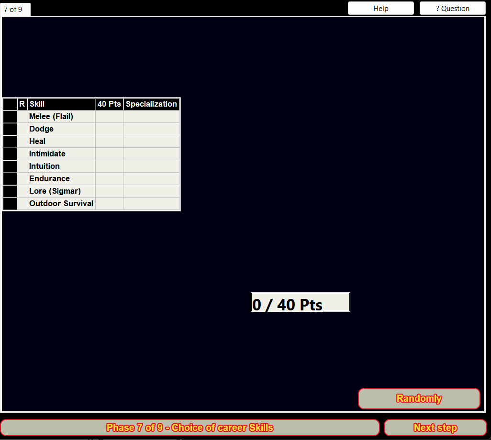
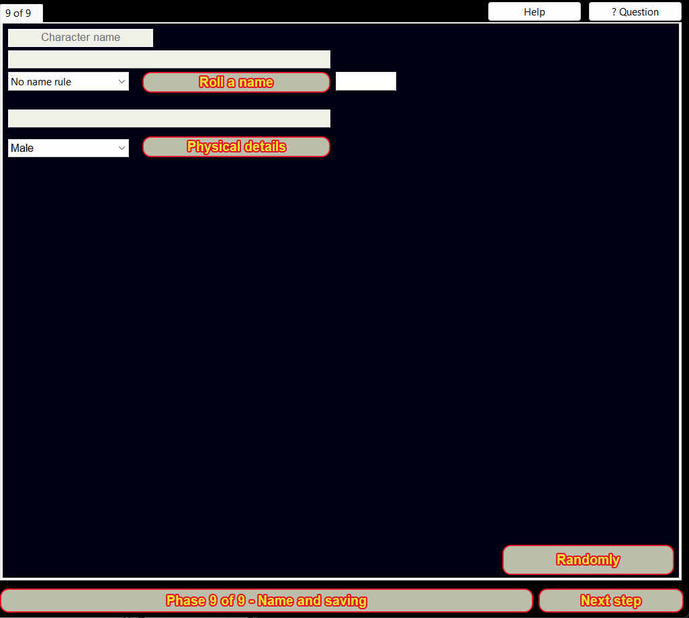

WFRP4 rules. French version: GUIDE_JOUEUR_1_CREATION_FR.md.
Who it is for: a player discovering the program, and a regular who wants to find one specific point (the per-question sheets are in phase 3).
The rules version (WFRP1, WFRP2, WFRP4) is chosen before creating the character and does not change afterwards. A WFRP1 character cannot become a WFRP4 character: characteristics, careers and skills do not match. If you change your mind, create a new character.
The only exception is between WFRP4 and the Momentum variant (WFRP5): see the "Momentum option" sheet (phase 3).
Creation is a series of steps, always in the same order. The Next step button only moves on when the current step is complete; otherwise a message tells you what is missing.
| Step | Tab | What you do |
|---|---|---|
| 0 | Books | choose the books to use |
| 1 | Specie | choose the species |
| 2 | Career | choose the career |
| 3 | Attribute | set the characteristics |
| 4 | Talent | choose the talents |
| 5 | Specie's Skills | spread the species skill points |
| 6 | Work's skills | spread the career skill points |
| 7 | Equipment | choose the starting equipment |
| 8 | Name | name the character, then save |
Depending on the species and the books, extra steps can slot in (clan, starting mutation, background, star sign, affiliation, familiar form). They are described below.

You see the list of active books (the ones chosen in the main menu). You can only remove books for this character: untick the ones you do not want.
Why it matters: the books ticked here decide which species, careers, talents and equipment are offered during the whole creation, and they are stored with the character.

Three ways to choose, each with a starting experience bonus or cost:
| Mode | What you do | Xp |
|---|---|---|
| Randomly | the program rolls the species | 20 Xp |
| Give the result of your throw | you roll the die yourself and enter the result | 20 Xp |
| Select | you take the species you want | 0 Xp |
Go to the Next step when you are happy. The figure is the Xp the character gains for leaving it to chance (Rulebook rule); it is added to the starting Xp.
Some species open extra steps:

Same principle as step 1:
| Mode | Xp |
|---|---|
| Randomly | 50 Xp |
| Give the result of your throw | 50 Xp |
| Select | 0 Xp |
Special points:
Five ways to proceed:
| Mode | What you do | Xp |
|---|---|---|
| Randomly | automatic roll, values fixed | 50 Xp |
| Give the result of your throw | you enter your own rolls | 50 Xp |
| Randomly and assign | automatic roll, but you decide which value goes to which characteristic | 25 Xp |
| Give your dice rolls and affect | your rolls, which you assign | 25 Xp |
| Allocate 100 points | you distribute 100 points yourself | 0 Xp |
Good to know:

The starting talents come from the species. When a talent offers a choice ("A or B", or "X (Any)"), you must decide: while a choice stays open you cannot continue.
A Randomly button rolls a talent when the species provides for it.

Your species gives you skills to spread. In the Rulebook most species take 3 skills at +5 and 3 skills at +3 (the Lustrian Skink takes 2 and 2).

You spread 40 points among your career skills (in WFRP2 this rule does not apply). The counter shows "n / 40 Pts"; it must be exactly 40.

The starting equipment comes from your career. Some lines ask for a choice: while a line is still to choose, the step cannot be validated. A Randomly button chooses for you.
You can also enter your starting money (gold crowns).

When everything is complete the character is saved with its books, and you can open it to let it evolve (see 2. Changing a character).

| Step | When it appears | What you do |
|---|---|---|
| Clan | Skaven species | choose a clan from the list or by roll |
| Starting mutation | Mutant species | roll the mutation ("Roll the mutation" button) |
| Background | background rules (mostly WFRP2) | roll the d10, settle each choice |
| Star sign | a book that provides it (Archives of the Empire II) | roll a sign; it changes characteristics, gives a talent and earns 25 Xp |
| Affiliation | some careers (regiments, etc.) | choose the affiliation — optional |
| Familiar form | a career that gives a familiar | choose or roll its form |
Example, the Star sign step ("Roll a star sign" button or pick from the list):

| You cannot continue because… | What to do |
|---|---|
| no book is ticked | tick at least one book (step 0) |
| no species / no career | make your choice (or click Randomly), then go to the Next step |
| a characteristic has no roll | roll or enter every roll |
| the 100-point total is not 100 | fix the allocation |
| a talent choice is still open | settle each "A / B" line |
| the number of species skills is wrong | follow "3 at +5 and 3 at +3" (or what the message says) |
| the career skills total is not 40 | adjust until 40 |
| an equipment choice is still open | choose, or click Randomly |
| the name is empty or already taken | change the name |